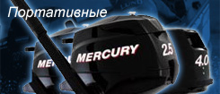
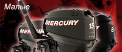
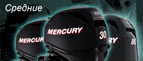

Главная
Катера
Лодочные моторы
Прицепы
Смазочные материалы
Эхолоты и Картплоттеры
Контакты
Четырехтактные двигатели Mercury

ПОРТАТИВНЫЕ (2.5-5 л.с.)
Легкие, мощные моторы с легким запуском.

МАЛЫЕ (6-25 л.с.)
Идеально подходят для отдыха и ловли рыбы на блесну

СРЕДНИЕ (30-150 л.с.)
Коррозионная стойкость и бесшумность работы